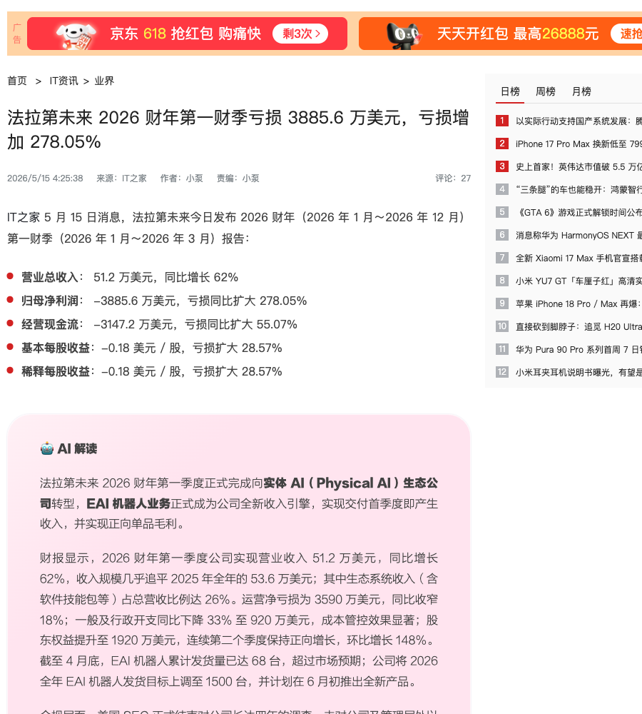
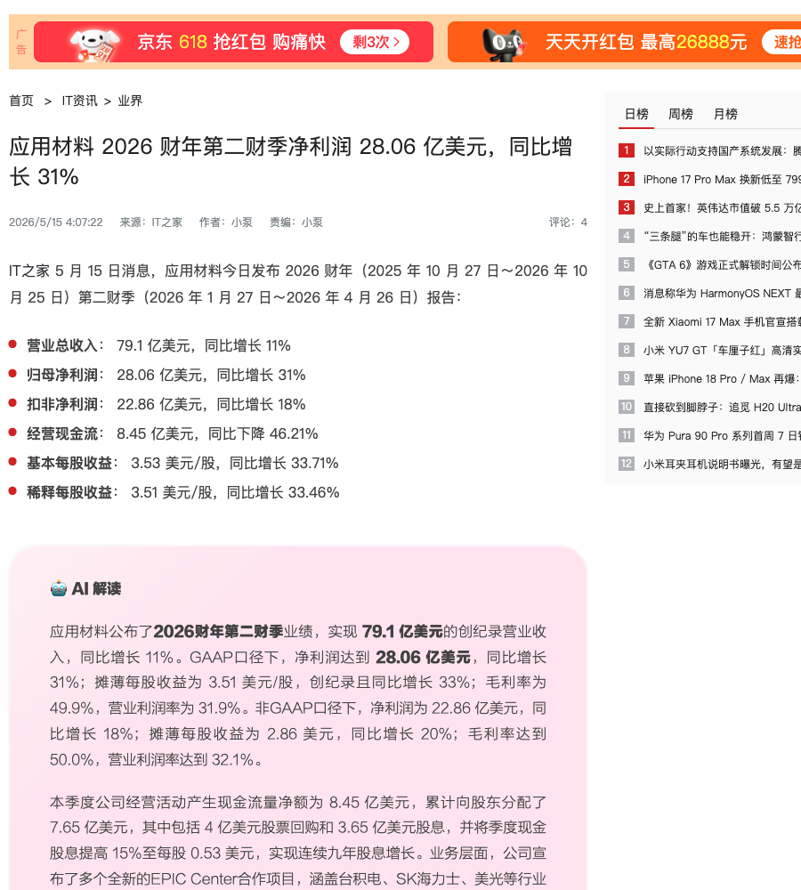
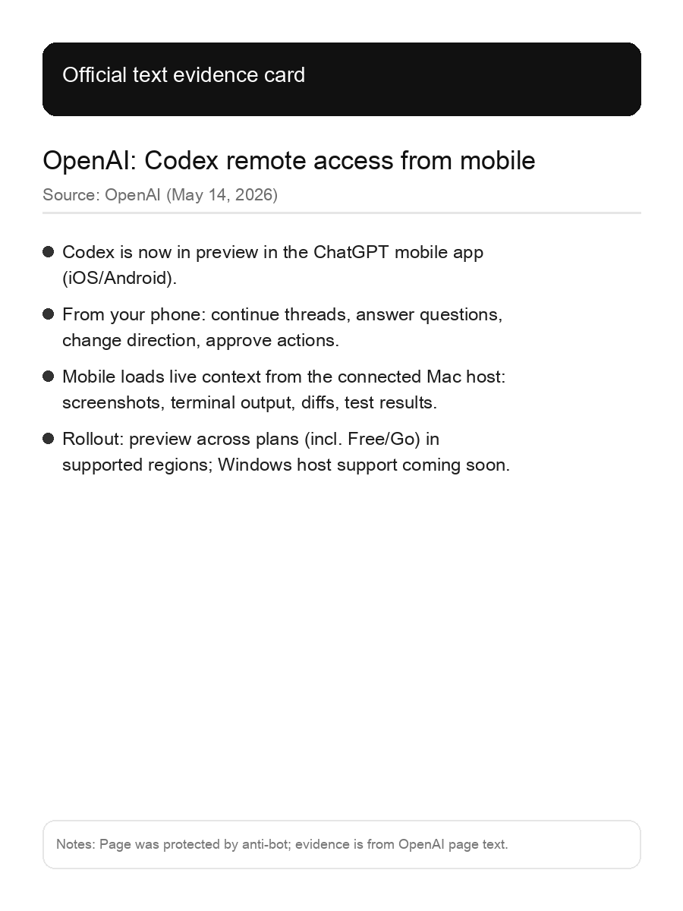

SuuJiKat AI Daily
AI 今天的共同信号：AI 正在从“写内容”走向“移动端接管协作 + 基建扩张 + 实体化交付”
2026-05-15 · AIGC 今日观察
过去两年，AIGC 的主战场是“生成”：写文案、出图、做视频、写代码。
但今天更清晰的信号是：AI 正在被推向三个更硬的方向：移动端工作流（随时可接管执行）、基础设施化（先进封装/设备）、实体化（机器人/车）。
当 AI 进入真实世界，最先被验证的不是“会不会说”，而是“能不能交付、能不能规模化、能不能变现”。
今日目录
01｜法拉第未来：把“Physical AI”写进财报，把 EAI 机器人当新收入引擎
02｜应用材料：AI 计算基础设施继续扩张，先进封装与设备成为确定性投资方向
03｜OpenAI Codex：把“远程编码协作”塞进手机，执行能力开始脱离桌面
01｜法拉第未来：把“Physical AI”写进财报，把 EAI 机器人当新收入引擎

图：IT之家原文页面截图（含发布时间与核心段落）。
IT之家 5 月 15 日消息：法拉第未来发布 2026 财年第一财季报告，披露营收与亏损等数据，并强调公司“完成向实体 AI（Physical AI）生态公司转型”，EAI 机器人业务成为新收入引擎；文中也提到 EAI 机器人发货量、全年发货目标上调与计划推出新产品等表述。
SuuJiKat 判断
AI 走向“实体化”的关键，不是多一个概念，而是把它写进财务结构：收入从哪里来、毛利从哪里来、交付节奏是什么。
对创作者/普通用户来说，Physical AI 的变化会更像“动作系统”：AI 会通过设备形态进入你的日常，体验从对话变成执行，而真实世界的成本与可靠性会筛掉大量 PPT AI。
💡 Physical AI（实体 AI）：把 AI 从屏幕里的对话/生成，推进到能在物理世界执行动作（机器人/车辆/硬件设备）的系统形态，关键指标会更像“交付与可靠性”，而不是“回答得像不像人”。
来源：IT之家
02｜应用材料：AI 计算基础设施继续扩张，先进封装与设备成为确定性投资方向

图：IT之家原文页面截图（含发布时间与要点）。
IT之家 5 月 15 日消息：应用材料发布 2026 财年第二财季报告。文中“AI 解读”提到公司宣布多个新的 EPIC Center 合作项目（覆盖台积电、SK 海力士、美光等），以及收购 ASMPT 的 NEXX 业务、拓展先进封装设备领域，并给出下一季度业绩指引。
SuuJiKat 判断
大模型的下一代能力，越来越受限于“封装/内存/互连/良率/成本”这些硬指标。
当大家都在谈模型和 Agent，真正决定体验上限的往往是基础设施：推理成本是否可日用、带宽与能效能否支撑端侧、供给链能否把产能变成稳定交付。对个人与团队工作流来说，端云取舍会越来越由成本与延迟决定。
💡 先进封装：把芯片“怎么装到一起”当作性能增长点（更短互连、更高带宽、更好散热/能效）。当制程红利放缓，封装成为 AI 芯片继续堆算力的关键路径之一。
来源：IT之家
03｜OpenAI Codex：把“远程编码协作”塞进手机，执行能力开始脱离桌面

图：官方文本证据卡（页面截图受 Cloudflare 限制，故用官方文本整理成卡片）。
OpenAI 于 5 月 14 日更新 Codex 能力说明：Codex 现在可以在 ChatGPT 移动端（iOS/Android）以预览形态使用，让你从手机上继续已有线程、修改方向、批准动作，并查看来自 Mac 主机的上下文（截图、终端输出、diff、测试结果等），把“远程编码协作/交付”从桌面延伸到随时可接管的移动端。
SuuJiKat 判断
关键不是“手机也能用”，而是：执行系统开始真正脱离固定工位。
对创作者/小团队更直接的影响：交付节奏更短（不等回到电脑也能继续推进迭代）；从对话到 diff 到测试结果更连续；工具竞争点从“写得好不好”转向“能不能被你随时接管并安全地批准执行”。
来源：OpenAI
今天的一个判断
AI 正在从“生成内容”走向“生成产品”：能不能交付、能不能规模化、能不能变现，会越来越早地被写进故事。
把三条约束线提前纳入决策：交付（稳定跑完任务）、成本（推理是否可日用）、端云（哪些该上云、哪些该下沉到端侧）。
来源
1) https://www.ithome.com/0/950/652.htm
2) https://www.ithome.com/0/950/651.htm
3) https://openai.com/index/work-with-codex-from-anywhere/